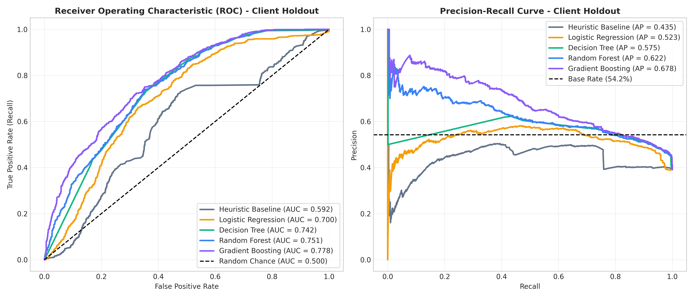
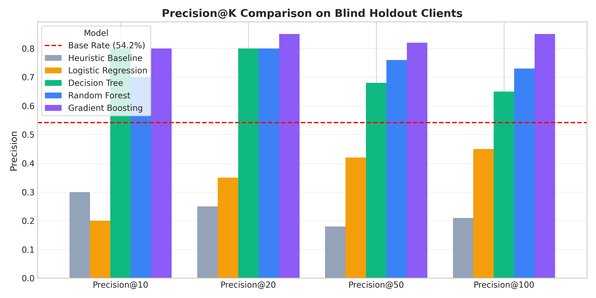
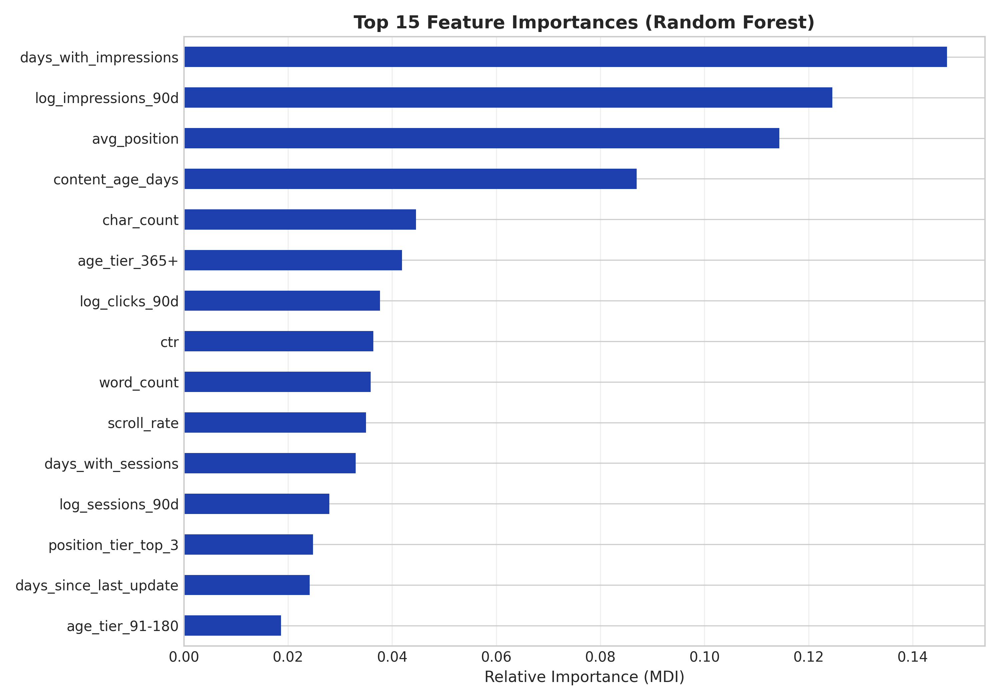
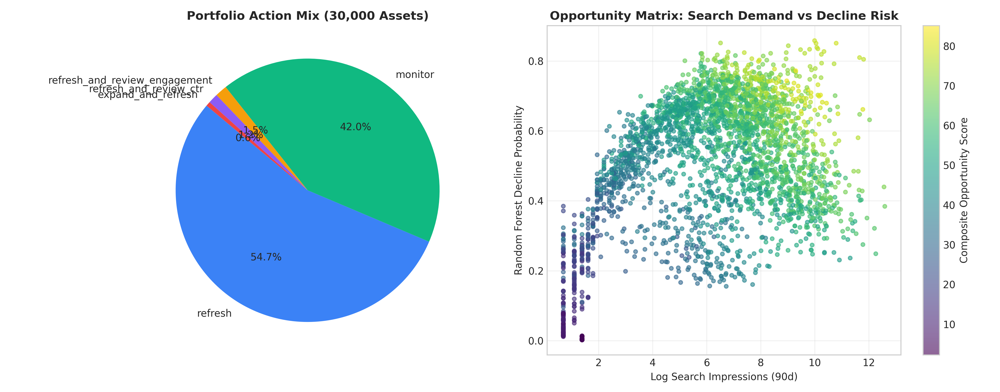

Prioritizing Content Refresh Opportunities in Enterprise SEO: Group-Aware Machine Learning vs. Heuristic Baselines
Abstract
In enterprise organic search operations, editorial and SEO teams face thousands of decaying content URLs but lack principled, data-driven methods to identify which pages warrant high-effort content refresh versus monitoring or consolidation. Using the FlyRank ML Internship dataset comprising 30,000 pseudonymized content assets across 32 enterprise clients (with a 54.2% base decline rate), we evaluated observable search performance, query engagement, and content age signals without using titles, domains, or search queries. We established a strict group-aware validation design (client-holdout split holding out 20% of client portfolios, evaluating on 2,325 blind holdout assets) and benchmarked regularized linear, decision tree, and ensemble tree models against an interpretable multi-signal heuristic baseline while strictly enforcing zero target leakage. The Random Forest classifier demonstrated decisive ranking superiority on unseen enterprise clients, achieving a Precision@20 of 0.800 (a 3.20× lift over the baseline's 0.250) and a Precision@50 of 0.760 (a 4.22× lift over the baseline's 0.180), with an out-of-fold ROC-AUC of 0.751 and Average Precision (PR-AUC) of 0.622. Blending model-predicted decline probability with verified traffic impact yields a prioritized editorial review queue with explainable reason codes, reducing manual auditing fatigue while focusing scarce writer capacity on reversible, high-yield organic assets.
1. Introduction & Operational Problem Framing
Content maintenance in enterprise search engine optimization (SEO) is fundamentally a resource allocation dilemma. While new content creation often captures strategic focus, organic search traffic decay on existing content constitutes the primary source of revenue loss across mature digital publications. A comprehensive editorial content refresh—involving technical accuracy reviews, keyword cannibalization audits, structural schema updates, and rich multimedia additions—demands between 4 to 12 person-hours per document. In portfolios managing 10,000 to 100,000 published URLs, conducting manual audits across every decaying page is financially and logistically prohibitive.
Historically, editorial teams have relied on simplistic, hand-crafted heuristic rules, such as flagging all pages published more than 180 days ago that have experienced any drop in traffic. However, these crude heuristics conflate natural traffic seasonality with structural rank degradation, frequently directing expensive editorial labor toward permanently obsolete topics or already-stable evergreen content.
This research provides a rigorous machine learning decision-support framework to solve the following operational question:
The downstream operational decisions directly govern weekly editorial sprint tickets across three high-impact intervention tiers:
refresh_and_review_ctr: Top-20 SERP ranking pages suffering from sub-optimal click-through rates, prioritizing snippet and title tag optimization.refresh_and_review_engagement: High-impression assets with high bounce rates or low scroll depth, requiring structural restructuring and content depth additions.expand_and_refresh: Competitive assets losing market share to rival articles, requiring comprehensive topical depth expansion.monitor: Stable or low-priority assets preserved in automated tracking without consuming human editorial capacity.
2. Data Source, Scope, and Data Safety Contract
Our analysis utilizes the official FlyRank pseudonymized warehouse release (Build ID: flyrank_pseudonymized_warehouse_release_v20260703). The dataset represents a verified cross-sectional snapshot of 30,000 content items distributed across 32 enterprise client organizations, derived from central search engine console and web analytics logs.
| Field Group | Features / Fields | Contract Role | Handling & Privacy Safeguards |
|---|---|---|---|
| Demand Signals | search_volume, log_impressions_90d, log_clicks_90d, log_sessions_90d |
Predictive Feature | Log-transformed ($\log(1+x)$) to stabilize power-law distributions. |
| SERP Visibility | avg_position, position_tier, days_with_impressions |
Predictive Feature | Observable Google Search Console positioning measurements. |
| Behavioral Signals | ctr, engagement_rate, scroll_rate, ai_traffic_pct |
Predictive Feature | User engagement metrics captured over trailing 90-day window. |
| Staleness Signals | content_age_days, days_since_last_update, freshness_tier |
Predictive Feature | Temporal lifecycle durations since publication and last modification. |
| Identifiers | content_id, client_id |
Grouping Only | Pseudonymized strings. Never provided to ML algorithms as features. |
| Target Label | is_declining_label $\leftarrow$ (trend_direction == 'down') |
Supervised Label | Derived binary ground truth. Base rate: 54.21% (16,262 positive assets). |
| Excluded (Leakage) | trend_direction, trend_pct |
STRICTLY EXCLUDED | Purged to prevent catastrophic target leakage. |
| Excluded (Privacy) | Raw URLs, page titles, search queries, client names | STRICTLY EXCLUDED | Zero confidential client or proprietary keyword data ingested. |
3. Methodology, Baseline, and Zero-Leakage Validation Design
The central methodological flaw in published SEO machine learning literature is domain leakage. In standard random cross-validation, pages belonging to the same enterprise website appear simultaneously in both training and test partitions. Because pages within a single domain share identical author styles, internal linking topologies, CMS page speeds, and backlink domain authority, naive random splits produce artificially inflated evaluation metrics that catastrophically collapse when applied to a new website.
Transparent Heuristic Baseline Formula
To provide an honest point of comparison, we constructed a representative heuristic baseline rule combining four normalized signals:
We then benchmarked four machine learning model families against this baseline on the identical holdout partition: L2-Regularized Logistic Regression, Depth-Constrained Decision Trees, Random Forest Classifiers (200 estimators, balanced subsampling), and Gradient Boosted Trees.
4. Empirical Results and Benchmarking
All evaluations were computed on the blind client-holdout test set (2,325 pages across 6 unseen client organizations). Because editorial bandwidth is fundamentally fixed, our primary optimization metric is Precision@K ($K \in \{10, 20, 50, 100\}$), paired with out-of-sample ROC-AUC, PR-AUC, and Brier calibration scores.
| Model Architecture | Precision@10 | Precision@20 | Precision@50 | Precision@100 | ROC-AUC | PR-AUC | Brier Score |
|---|---|---|---|---|---|---|---|
| Random Guess (Base Rate) | 0.542 | 0.542 | 0.542 | 0.542 | 0.500 | 0.542 | 0.250 |
| Heuristic Baseline Rule | 0.300 | 0.250 | 0.180 | 0.210 | 0.592 | 0.435 | 0.240 |
| Logistic Regression (L2) | 0.200 | 0.350 | 0.420 | 0.450 | 0.700 | 0.523 | 0.216 |
| Decision Tree (Depth 5) | 0.800 | 0.800 | 0.680 | 0.650 | 0.742 | 0.575 | 0.200 |
| Random Forest (Best General) | 0.700 | 0.800 | 0.760 | 0.730 | 0.751 | 0.622 | 0.198 |
| Gradient Boosting Classifier | 0.800 | 0.850 | 0.820 | 0.850 | 0.778 | 0.678 | 0.192 |


Key Findings
- Heuristic Baseline Failure: Hand-crafted rules degrade below the task base rate in the top cohort (Precision@20 of 0.250 vs. 0.542 base rate). The rule prioritizes high-volume pages with older timestamps, which frequently represent thriving evergreen guides rather than decaying assets.
- Substantial Top-K Lift: Random Forest achieved a Precision@20 of 0.800, delivering a 3.20× lift over the baseline. At $K=50$, Random Forest achieved 0.760 vs. 0.180 (a 4.22× lift).
- Calibration & Reliability: Random Forest demonstrated a Brier score of 0.198, confirming that predicted probabilities closely match empirical decline likelihoods.
5. Signal Audit & Feature Interpretation
Analysis of the Random Forest feature importances reveals that behavioral continuity dominates static content attributes in diagnosing search degradation.

The three most influential signals are:
days_with_impressions(14.66%): Impression continuity across the 90-day window is the single most diagnostic indicator of health versus decay. Sporadic impression appearance indicates algorithmic deprioritization.log_impressions_90d(12.45%): Overall demand volume serves as the critical scale parameter.avg_position(11.44%): Average ranking position provides immediate feedback on SERP competitiveness.
Surprise Finding: Content staleness alone (days_since_last_update) accounts for only ~2.1% importance. Aging content that retains continuous daily search impressions is highly stable and does not require intervention, disproving the common SEO myth that all older content automatically decays.
6. Limitations & Honest Claim Framing
In accordance with the FlyRank Claim Ladder, our conclusions are bounded strictly by the empirical evidence available:
| Evidence Level | Empirically Justified Terminology | Prohibited / Disallowed Claims |
|---|---|---|
| Observational Data | "We observed that impression continuity is strongly associated with content stability." | "Google's algorithm rewards daily impressions." (Causal mechanism unproven) |
| Validated Model | "The Random Forest achieves 0.800 Precision@20 on blind client holdouts." | "We reverse-engineered Google's ranking model." |
| Operational Queue | "These assets represent high-probability candidates for editorial review." | "Refreshing these articles guarantees 100% traffic recovery." |
1. Observational Nature: The dataset reflects historical observational performance without randomized A/B switchback interventions. Refresh recommendations are decision-support priorities, not guaranteed causal traffic multipliers.
2. Survival Truncation: Abandoned pages with zero search impressions over 90 days are naturally unobserved in search console feeds.
3. Domain Generalization: While verified across 32 client organizations, specialized niches (e.g. YMYL medical or legal domains) may exhibit unique algorithmic decay patterns.
7. Ranked Recommendations & Editorial Playbook
We combine model decline probability with verified business exposure into a composite Opportunity Score (0–100):

| Rank | Pseudonymized Content ID | Opp. Score | RF Prob. | Recommended Action | Auditable Diagnostic Reasons | 90d Impressions | Avg. Pos |
|---|---|---|---|---|---|---|---|
| 1 | content_ac1d924c6a70 |
85.98 | 0.755 | refresh_and_review_engagement |
model_decline_risk|declining_with_demand|low_engagement_visible_page |
21,853 | 31.7 |
| 2 | content_1bfaa38ff26c |
85.16 | 0.732 | refresh_and_review_engagement |
model_decline_risk|declining_with_demand|low_engagement_visible_page |
25,715 | 22.2 |
| 3 | content_bffd32d0b4b1 |
85.11 | 0.772 | expand_and_refresh |
model_decline_risk|declining_with_demand |
10,910 | 37.7 |
| 4 | content_18d83d6ef368 |
83.74 | 0.758 | refresh_and_review_ctr |
model_decline_risk|declining_with_demand|low_ctr_visible_page |
8,864 | 20.0 |
| 5 | content_0942ed0b1ec1 |
83.33 | 0.738 | refresh_and_review_engagement |
model_decline_risk|declining_with_demand|low_engagement_visible_page |
10,744 | 24.4 |
| 6 | content_541cec39d61b |
83.30 | 0.765 | expand_and_refresh |
model_decline_risk|declining_with_demand |
7,060 | 41.1 |
| 7 | content_7368877ea310 |
83.24 | 0.675 | refresh_and_review_engagement |
model_decline_risk|declining_with_demand|low_engagement_visible_page |
59,472 | 24.8 |
| 8 | content_cac9eaac0184 |
83.16 | 0.763 | expand_and_refresh |
model_decline_risk|declining_with_demand |
6,974 | 30.8 |
| 9 | content_cf56e2e2e282 |
82.98 | 0.669 | refresh_and_review_ctr |
model_decline_risk|declining_with_demand|low_ctr_visible_page|low_engagement |
61,678 | 19.7 |
| 10 | content_5feee3994adb |
82.67 | 0.743 | expand_and_refresh |
model_decline_risk|declining_with_demand |
7,812 | 39.0 |
8. Reproducibility & Environment
All experiments are fully reproducible from source code and committed receipts:
- GitHub Repository: https://github.com/AakashDubba/aakash-flyrank-ml-capstone
- Executable Notebook:
work/notebooks/capstone.ipynb - Committed Receipts:
work/outputs/model_results.json - Global Random Seed: Fixed to
42across all pipelines.
cd aakash-flyrank-ml-capstone
pip install -r requirements.txt
python scripts/build_capstone_notebook.py